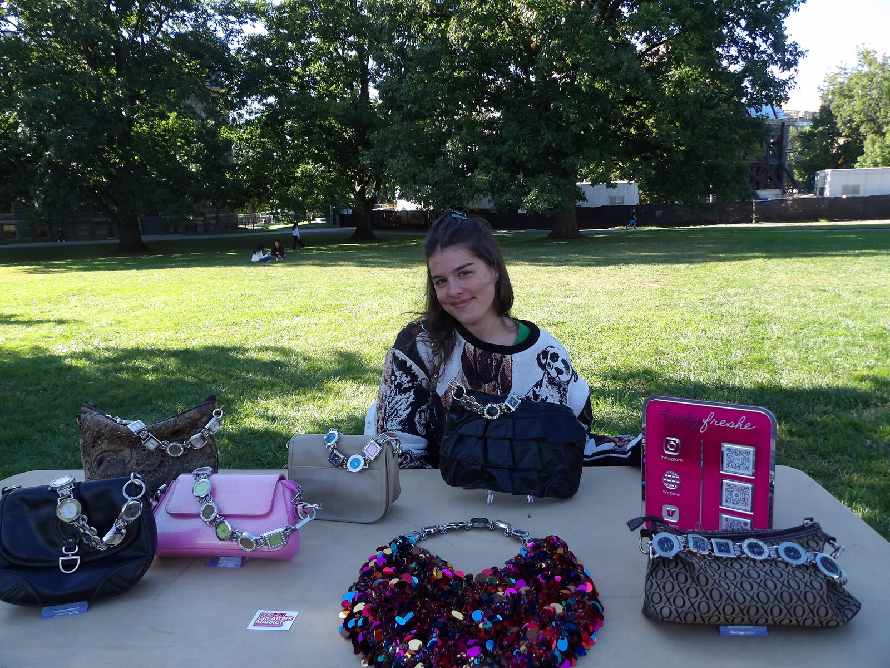

The idea
The kids I lifeguarded over the summer kept noticing my "funky" and "fresh" earrings. The nickname stuck, and so did the idea.

Etsy opens
I took Funkyfreshe online. My first handmade pairs shipped out to strangers across the world.

My first in-person booth
My first in-person booth at Cincinnati's beloved City Flea.

Second summer of the City Flea
Back for round two, now a regular fixture in front of Cincinnati Music Hall.

Third summer + printed sheets
A third summer at the Flea, and a new trick: printed shrink-film designs (hello, Eras Tour) that let my collection get a little louder.


Closing the Etsy shop
I moved off to college and closed the Etsy shop because fulfilling online orders from a dorm room wasn't realistic.
Back at the Flea + watch purses
Still vending all summer at the City Flea, and I debuted something new: watch purses.

Cornell Creators Market
I brought Funkyfreshe to Cornell too, joining the Cornell Creators Market for the very first time.

First banner sale
My first proper banner sale.

Cornell Creators Market, again
Back at the Creators Market with a full table of new designs.

A home of my own
Five years in, I gave Funkyfreshe a website. People kept asking me where to find the purses, so now there's one hub where I can show what's available and you can buy directly. You're looking at it.

Cornell Creators Market, a third time
Back out on the Arts Quad for my third Cornell Creators Market, with a full table of purses on display.
